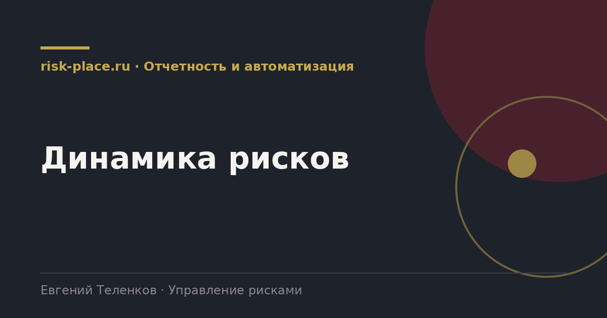

Главная · Библиотека · Отчетность и автоматизация · Динамика рисков
Библиотека · Отчетность и автоматизация
Один срез показывает, где компания стоит. Два среза показывают, куда она идет. Второе важнее.

Руководитель, которому показали карту рисков с восемью красными точками, не может сделать вывод. Восемь это много или мало. Стало лучше или хуже. Работает ли то, что делалось весь год.
Единственный способ ответить на эти вопросы это сравнение с прошлым периодом. Причем сравнение должно быть корректным, то есть проводиться по одной и той же методологии и по сопоставимому перечню рисков. Смена шкал между периодами обесценивает динамику полностью, и это стоит помнить при пересмотре методологии.
Требования к данным, а не к отчету.
От простого к сложному, все рабочие.
| Способ | Что показывает | Когда применять |
|---|---|---|
| Стрелки на карте рисков | Движение отдельных рисков между двумя периодами | Отчет комитету и совету, самый наглядный |
| Столбцы по зонам за периоды | Изменение числа рисков в каждой зоне | Быстрая оценка общей картины |
| График совокупной оценки | Сумма денежных оценок или взвешенный индекс по периодам | Разговор о результативности системы |
| Тепловая шкала по категориям | Как менялась каждая категория, строки категории, столбцы периоды | Поиск направления, где ухудшается |
| График индикатора с порогами | Приближение к границе во времени | Оперативный мониторинг |
| Воронка мероприятий | Сколько запланировано, выполнено, просрочено по периодам | Дисциплина исполнения |
Динамика меняет структуру разговора с руководством. Вместо описания состояния появляется объяснение причин. Два риска ушли из красной зоны, потому что выполнены такие-то мероприятия. Один пришел, потому что изменились внешние условия и мы это увидели по индикатору за два месяца до события.
Такой разговор дает функции то, чего не дает никакой отчет о состоянии, а именно доказательство пользы. И одновременно он задает правильный вопрос руководству, продолжаем ли мы вкладываться в то, что дает результат, и что делаем с направлением, где картина ухудшается второй квартал подряд.
Частые вопросы
Одна форма для любого вопроса
Расскажем о ближайших датах, предложим формат под ваш состав участников и назовем порядок бюджета.
Предпочитаете почту — напишите на info@risk-place.ru. Адрес: Москва, улица Скаковая, 32с2.
 risk-
risk-